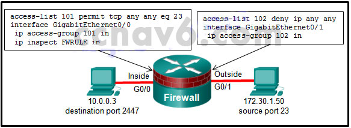
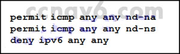
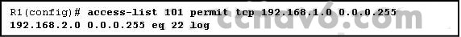
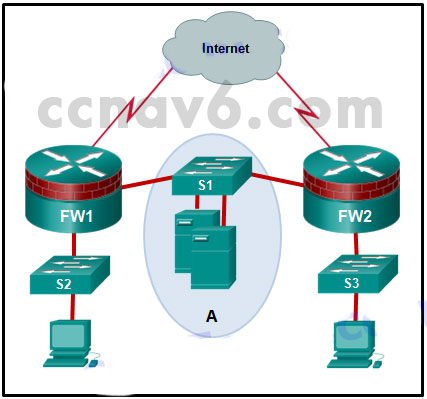

1.Además de los criterios utilizados por las ACL extendidas, ¿qué condiciones utiliza un firewall clásico para filtrar el tráfico?
- Números de puerto de origen y destino TCP / UDP
- Números de protocolo TCP / IP
- Direcciones IP de origen y destino
- Información de sesión de protocolo de capa de aplicación *
- @Javi__Super
El firewall clásico proporciona una inspección de estado que incluye protocolos que requieren múltiples canales para la comunicación, como FTP y H.323. Los números de protocolo, los números de puerto y las direcciones IP de origen y destino son todos filtros estándar para ACL extendidas.
2.Se ha configurado un enrutador como un firewall clásico y una ACL de entrada aplicada a la interfaz externa. ¿Qué acción realiza el enrutador después de inspeccionar el tráfico de entrada a salida y se crea una nueva entrada en la tabla de estado?
- Cuando el tráfico regresa de su destino, se vuelve a inspeccionar y se agrega una nueva entrada a la tabla de estado.
- La interfaz interna ACL se reconfigura para permitir el acceso de la dirección IP del host a Internet.
- La entrada permanece en la tabla de estado después de que se termina la sesión para que el host pueda reutilizarla.
- Se agrega una entrada de ACL dinámica a la interfaz externa en la dirección de entrada. *
- @Javi__Super
El flujo de tráfico de la red interna a la red pública es comúnmente inspeccionado. Los flujos de tráfico hacen que se agreguen entradas dinámicas a la interfaz externa para el tráfico entrante, de modo que el tráfico que se origina en la red interna que va a la red pública puede regresar a la fuente interna.
3.Consulte la presentación. Si un pirata informático en la red externa envía un paquete IP con la dirección de origen 172.30.1.50, la dirección de destino 10.0.0.3, el puerto de origen 23 y el puerto de destino 2447, ¿qué hace el firewall Cisco IOS con el paquete?

- El paquete inicial se descarta, pero los paquetes posteriores se reenvían.
- El paquete se reenvía y se genera una alerta.
- El paquete se reenvía y no se genera ninguna alerta.
- El paquete se ha caído. *
- @Javi__Super
Esta ACL está negando todo el tráfico TCP / IP que entra en la interfaz externa. Debido a que la dirección de origen coincide con cualquier parámetro y debido a que la línea de la lista de acceso se filtra según el acceso denegado (denegar), el paquete se descarta.
4.¿Cuál es un beneficio de usar un firewall con estado en lugar de un servidor proxy?
- capacidad para realizar la autenticación de usuario
- mejor presentación *
- capacidad para realizar el filtrado de paquetes
- prevención de ataques de Capa 7
- @Javi__Super
Un servidor de seguridad con estado funciona mejor que un servidor proxy. Un firewall con estado no puede autenticar a los usuarios ni evitar ataques de Capa 7. Tanto un firewall con estado como un servidor proxy pueden filtrar paquetes.
5.¿Cuál es una limitación de un firewall con estado?
- autenticación de usuario débil
- no se puede filtrar el tráfico innecesario
- no es tan efectivo con el tráfico basado en UDP o ICMP *
- mala información de registro
- @Javi__Super
Las limitaciones de los firewalls con estado incluyen lo siguiente:
Los firewalls con estado no pueden evitar ataques de capa de aplicación.
Los protocolos como UDP e ICMP no tienen estado y no generan la información necesaria para una tabla de estado.
En ocasiones, se debe abrir una gama completa de puertos para admitir aplicaciones específicas que abren varios puertos.
Los firewalls con estado carecen de autenticación de usuario.
6.¿Qué declaración describe una política de seguridad típica para una configuración de firewall DMZ?
- El tráfico que se origina desde la interfaz interna generalmente está bloqueado en su totalidad o se permite de manera muy selectiva a la interfaz externa.
- El tráfico que se origina en la interfaz DMZ se permite de forma selectiva a la interfaz externa. *
- El tráfico que se origina en la interfaz externa puede atravesar el cortafuegos hacia la interfaz interna con pocas o ninguna restricción.
- El tráfico de retorno desde el interior que está asociado con el tráfico que se origina desde el exterior puede atravesar desde la interfaz interna a la interfaz externa.
- @Javi__Super
Con un diseño de firewall de tres interfaces que tiene conexiones internas, externas y DMZ, las configuraciones típicas incluyen lo siguiente: El
tráfico que se origina en DMZ destinado a la red interna normalmente está bloqueado.
El tráfico que se origina en la DMZ destinada a redes externas generalmente se permite en función de los servicios que se utilizan en la DMZ.
El tráfico que se origina en la red interna destinada desde la DMZ normalmente se inspecciona y se le permite regresar.
El tráfico que se origina en redes externas (la red pública) generalmente se permite en la DMZ solo para servicios específicos.
7.Consulte la presentación. ¿Qué enunciado describe la función de las ACE?

- Estas ACE permiten el tráfico de descubrimiento de vecinos IPv6. *
- Estas ACE aparecen automáticamente al final de cada ACL de IPv6 para permitir que se produzca el enrutamiento de IPv6.
- Estas son ACE opcionales que se pueden agregar al final de una ACL de IPv6 para permitir que los mensajes ICMP se definan en grupos de objetos denominados nd-na y nd-ns.
- Estas ACE se deben agregar manualmente al final de cada ACL de IPv6 para permitir que ocurra el enrutamiento de IPv6.
- @Javi__Super
El protocolo ICMP se utiliza para el descubrimiento de vecinos. Las dos declaraciones de permiso permiten el anuncio de vecinos y los mensajes de solicitud de vecinos entre dispositivos IPv6.
8.Cuando se está implementando una ACL de tráfico de Internet entrante, ¿qué se debe incluir para evitar la suplantación de identidad de las redes internas?
- ACE para evitar el tráfico desde espacios de direcciones privadas *
- ACE para evitar el tráfico de direcciones de difusión
- ACE para prevenir el tráfico ICMP
- ACE para evitar el tráfico HTTP
- @Javi__Super
Las ACE comunes para ayudar con antispoofing incluyen el bloqueo de paquetes que tienen una dirección de origen en el rango 127.0.0.0/8, cualquier dirección privada o cualquier dirección de multidifusión. Además, el administrador no debe permitir ningún paquete saliente con una dirección de origen que no sea una dirección válida que se utiliza en las redes internas de la organización.
9.Para facilitar el proceso de solución de problemas, ¿qué mensaje ICMP entrante debe permitirse en una interfaz externa?
- solicitud de eco
- solicitud de sello de tiempo
- respuesta de eco *
- respuesta de sello de tiempo
- @Javi__Super
Al permitir que el mensaje de respuesta de eco ICMP ingrese a la organización, los usuarios internos pueden hacer ping a direcciones externas (y el mensaje de respuesta puede regresar).
10.¿Qué comando se usa para activar una ACL de IPv6 llamada ENG_ACL en una interfaz para que el enrutador filtre el tráfico antes de acceder a la tabla de enrutamiento?
- ipv6 access-class ENG_ACL en
- ipv6 traffic-filter ENG_ACL out
- ipv6 traffic-filter ENG_ACL en *
- ipv6 access-class ENG_ACL out
- @Javi__Super
Para los fines de aplicar una lista de acceso a una interfaz particular, el comando ipv6 traffic-filter IPv6 es equivalente al comando access-group IPv4. También se requiere la dirección en la que se examina el tráfico (dentro o fuera).
11.Cuando se configura un Firewall de política basado en la zona de Cisco IOS a través de la CLI, ¿qué paso se debe tomar después de que se hayan creado las zonas?
- Asignar interfaces a las zonas.
- Establecer políticas entre zonas. *
- Identificar subconjuntos dentro de las zonas.
- Diseñar la infraestructura física.
- @Javi__Super
Los pasos para configurar las zonas en un Firewall de políticas basado en zonas son los siguientes:
Paso 1. Determine las zonas.
Paso 2. Establecer políticas entre zonas.
Paso 3. Diseñar la infraestructura física.
Paso 4. Identifique los subconjuntos dentro de las zonas y combine los requisitos de tráfico.
12.Un administrador de red está implementando simultáneamente un Firewall clásico y un Firewall basado en zonas en un enrutador. ¿Qué enunciado describe mejor esta implementación?
- Se debe asignar una interfaz a una zona de seguridad antes de que se pueda realizar la inspección de IP.
- Ambos modelos deben ser implementados en todas las interfaces.
- Los dos modelos no se pueden implementar en una sola interfaz. *
- Un Firewall clásico y un Firewall basado en zonas no pueden usarse simultáneamente.
- @Javi__Super
Tanto un Firewall clásico como un Firewall basado en zonas pueden implementarse simultáneamente en un enrutador, pero no pueden configurarse en una sola interfaz.
13.¿Qué dos reglas sobre interfaces son válidas cuando se implementa un Firewall de políticas basado en zonas? (Escoge dos.)
- Si una interfaz es un miembro de la zona, pero la otra no lo es, se pasará todo el tráfico.
- Si ninguna de las interfaces es miembro de la zona, la acción es pasar el tráfico. *
- Si ambas interfaces son miembros de la misma zona, se pasará todo el tráfico. *
- Si una interfaz es un miembro de la zona y existe un par de zonas, se pasará todo el tráfico.
- @Javi__Super
Las reglas para el tráfico que transita a través del enrutador son las siguientes:
Si ninguna de las interfaces es miembro de la zona, la acción resultante es pasar el tráfico.
Si ambas interfaces son miembros de la misma zona, la acción resultante es pasar el tráfico.
Si una interfaz es un miembro de la zona, pero la otra no lo es, la acción resultante es eliminar el tráfico independientemente de si existe un par de zonas.
Si ambas interfaces pertenecen al mismo par de zonas y existe una política, la acción resultante es inspeccionar, permitir o eliminar, tal como lo define la política.
14.Si las ACE proporcionadas están en la misma ACL, ¿qué ACE debería aparecer primero en la ACL según las mejores prácticas?
- Permitir udp 172.16.0.0 0.0.255.255 host 172.16.1.5 eq snmptrap *
- deny udp any host 172.16.1.5 eq snmptrap
- negar tcp cualquier eq telnet
- Permitir ip cualquiera cualquiera
- @Javi__Super
Una buena práctica para configurar una ACL extendida es asegurarse de que la ACE más específica se ubique más arriba en la ACL. Considere las dos declaraciones UDP de permiso. Si ambos de estos estaban en una ACL, la ACE de SNMP es más específica que la declaración UDP que permite un rango de 10,001 números de puerto UDP. El SNMP ACE se ingresaría antes que el otro UDP ACE. Las ACE de más específico a menos específico son las siguientes:
permitir udp 172.16.0.0 0.0.255.255 host 172.16.1.5 eq snmptrap
deny udp cualquier host 172.16.1.5 eq snmptrap
permite tcp 172.16.0.0 0.0.3.255 cualquier
deny tcp cualquier cualquier eq
Permiso de telnet udp any any 10000 20000
permit ip cualquiera cualquiera
15.¿Qué herramienta de seguridad supervisa el tráfico de red a medida que fluye dentro y fuera de la organización y determina si los paquetes pertenecen a una conexión existente o son de una fuente no autorizada?
- dispositivo de seguridad web
- sistema de protección contra intrusos
- aplicación proxy
- cortafuegos de estado *
- @Javi__Super
Un firewall con estado filtra los paquetes según la información de estado que se mantiene en una tabla de estado. Debido a que utiliza información de estado, el firewall con estado puede analizar el tráfico en las capas 4 y 5 de OSI.
16.Una empresa está implementando un nuevo diseño de red en el que el enrutador de frontera tiene tres interfaces. La interfaz Serial0 / 0/0 se conecta al ISP, GigabitEthernet0 / 0 se conecta a la DMZ y GigabitEthernet / 01 se conecta a la red privada interna. ¿Qué tipo de tráfico recibiría la menor cantidad de inspección (tendría la mayor libertad de viaje)?
- Tráfico que va desde la red privada a la DMZ *
- Tráfico que regresa de la DMZ después de provenir de la red privada
- Tráfico que se origina en la red pública y que está destinado a la DMZ.
- Tráfico que regresa de la red pública después de provenir de la red privada
- @Javi__Super
La mayoría del tráfico dentro de una organización se origina desde una dirección IP privada. La cantidad de inspección realizada a ese tráfico depende de su destino o si el tráfico que va a esa dirección IP privada originó la conexión. La zona desmilitarizada suele contener servidores. El tráfico que está destinado a esos servidores se filtra según los servicios que proporciona el servidor (HTTP, HTTPS, DNS, etc.).
17.Consulte la presentación. La declaración de ACL es la única configurada explícitamente en el enrutador. Basándose en esta información, ¿qué dos conclusiones se pueden extraer con respecto a las conexiones de red de acceso remoto? (Escoge dos.)

- Se permiten las conexiones SSH desde la red 192.168.2.0/24 a la red 192.168.1.0/24.
- Se permiten las conexiones Telnet desde la red 192.168.1.0/24 a la red 192.168.2.0/24.
- Las conexiones de Telnet desde la red 192.168.1.0/24 a la red 192.168.2.0/24 están bloqueadas. *
- Se permiten conexiones SSH desde la red 192.168.1.0/24 a la red 192.168.2.0/24. *
- @Javi__Super
La lista de acceso extendido en la exposición está permitiendo el tráfico SSH (puerto TCP 22) que se obtiene de la red 192.168.1.0/24 y viaja a la red 192.168.2.0/24. Los paquetes que cumplen con este criterio se registran en el búfer de registro local (el predeterminado), un servidor de syslog, o ambos, según la configuración del enrutador para la configuración de syslog. El resto del tráfico se deniega debido a la denegación implícita al final de cada ACL.
18.Considere la siguiente lista de acceso.
access list.access-list 100 permite ip host 192.168.10.1 cualquier
access-list 100 deny icmp 192.168.10.0 0.0.0.255 any echo
access-list 100 perm ip any Cualquiera
¿Qué dos acciones se toman si la lista de acceso se coloca en una entrada? ¿Puerto Ethernet Gigabit enrutador que tiene la dirección IP 192.168.10.254 asignada? (Escoge dos.)
- Solo el dispositivo de red asignado a la dirección IP 192.168.10.1 puede acceder al enrutador.
- Los dispositivos en la red 192.168.10.0/24 no pueden responder a ninguna solicitud de ping.
- Los dispositivos en la red 192.168.10.0/24 no pueden hacer ping a otros dispositivos en la red 192.168.11.0. *
- Se permite una sesión de Telnet o SSH desde cualquier dispositivo en 192.168.10.0 al enrutador con esta lista de acceso asignada. *
- @Javi__Super
El primer ACE permite que el dispositivo 192.168.10.1 realice transacciones basadas en TCP / IP con cualquier otro destino. El segundo ACE evita que los dispositivos en la red 192.168.10.0/24 emitan cualquier ping a cualquier otra ubicación. Todo lo demás está permitido por el tercer ACE. Por lo tanto, se permite una sesión de Telnet / SSH o una respuesta de ping desde un dispositivo en la red 192.168.10.0/24.
19.¿Cuál es la función de la acción de paso en un Firewall de políticas basado en la zona de Cisco IOS?
- registro de paquetes rechazados o descartados
- Inspeccionar tráfico entre zonas para control de tráfico.
- Seguimiento del estado de las conexiones entre zonas.
- reenvío de tráfico de una zona a otra *
- @Javi__Super
La acción de aprobación realizada por Cisco IOS ZPF permite el reenvío de tráfico de una manera similar a la declaración de permiso en una lista de control de acceso.
20.¿Qué comando verificará una configuración de Firewall de Políticas Basadas en la Zona?
- Mostrar interfaces
- mostrar zonas
- Mostrar ejecución-config *
- mostrar protocolos
- @Javi__Super
La configuración de ZPF se puede verificar con show running-config, show policy-map, show class-map, show zone security y show-zone-pair.
21.Consulte la presentación. La red "A" contiene varios servidores corporativos a los que acceden los hosts desde Internet para obtener información sobre la corporación. ¿Qué término se usa para describir la red marcada como "A"?

- red interna
- red no confiable
- límite de seguridad perimetral
- DMZ *
- @Javi__Super
Una zona desmilitarizada o DMZ es un área de red protegida por uno o más cortafuegos. La DMZ normalmente contiene servidores a los que los usuarios externos acceden comúnmente. Un servidor web está comúnmente contenido en una DMZ.
22.¿Qué tipo de paquete no puede ser filtrado por una ACL de salida?
- paquete de multidifusión
- Paquete ICMP
- paquete de difusión
- paquete generado por el enrutador *
- @Javi__Super
El tráfico que se origina dentro de un enrutador, como los pings de un símbolo del sistema, el acceso remoto desde un enrutador a otro dispositivo o las actualizaciones de enrutamiento no se ven afectados por las listas de acceso salientes. El tráfico debe fluir a través del enrutador para que el enrutador aplique las ACE.
23.Cuando se configura un Firewall de política basado en la zona de Cisco IOS, ¿qué dos acciones se pueden aplicar a una clase de tráfico? (Escoge dos.)
- soltar *
- Iniciar sesión
- adelante
- inspeccionar *
- @Javi__Super
Las tres acciones que se pueden aplicar son inspeccionar, deje caer, y pasar
Inspeccionar - Esta acción ofrece control de tráfico basado en estado.
Descartar: esta es la acción predeterminada para todo el tráfico. De manera similar a la denegación implícita al final de cada ACL, el IOS aplica una caída explícita al final de cada mapa de políticas.
Pasar: esta acción permite al enrutador reenviar el tráfico de una zona a otra.
24.Rellena el espacio en blanco.
- Un estado firewall con supervisa el estado de las conexiones a medida que el tráfico de la red entra y sale de la organización.
- @Javi__Super
25.Rellena el espacio en blanco.
- La acción de aprobación en un Firewall de políticas basado en la zona de Cisco IOS es similar a una declaración de permiso en una ACL.
- @Javi__Super